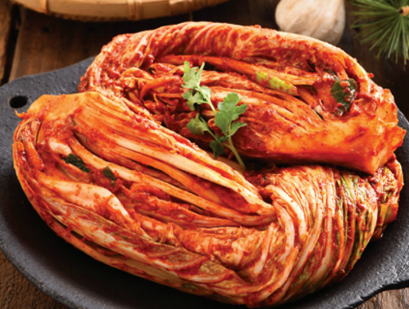

Doenjang Jjigae (Ensopado de pasta de Soja)
Este prato é um guisado coreano básico feito com pasta de soja fermentada. É um dos pratos coreanos caseiros mais populares do dia a dia.

Baechu Kimchi (Repolho fermentado)
O Baechu é feito por lacto-fermentação, o mesmo processo que cria o chucrute e os tradicionais puckles de endro. Utilizamos, além do repolho, rabanete coreano, vegetais aromáticos, jeotgal (marisco salgado), gochugaru e vários temperos.